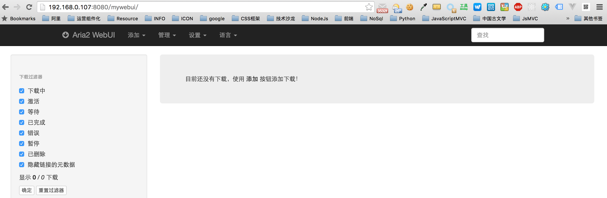
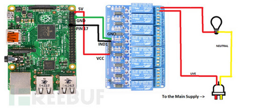

树莓派之旅
Raspberry Pi
云易 / 178518@gmail.com
2016-07-05
目录
树莓派介绍
玩派的必备技能和工具
派的入门
派的进阶
派的智能家居
树莓派是什么?
一台卡片式电脑,其系统基于Linux
基于ARM,以SD/MicroSD卡为内存硬盘,具备所有PC的基本功能

树莓派参数

Raspberry Pi 上的接口

开发板介绍
FireFly RK3288 开发板(RMB 799)
NVIDIA嵌入平台Jetson TX1(RMB 5000)
树莓派介绍
玩派的必备技能和工具
烧录系统,备份系统
Linux的常用命令,推荐鸟哥的Linux私房菜
路由/域名解析/端口映射/安全等知识
SSH终端
派的入门
派的基础配置
LNAMP环境搭建
Aria2下载机搭建
Samba服务搭建
Web服务搭建
派的基础配置
树莓派登录
源更改/更新软件
raspi-config配置树莓派
无线网卡配置
LNAMP环境搭建
万能的sudo apt-get install
编译Tengine
二进制文件的部署安装Node

Aria2下载机搭建
万能的sudo apt-get install

Samba服务搭建
sudo apt-get install samba samba-common-bin
配置挂载目录和权限
配置开机自动访问
Aria2自动下载到Samba目录实现共享
派的进阶
Keeplive配置
LB负载均衡配置
NFS共享挂载
Docker搭建
树莓派集群搭建
树莓派集群搭建
派的智能家居
GPIO环境配置
树莓派控制电灯开关
树莓派应用
GPIO环境配置

树莓派控制电灯开关
杜邦线/继电器/电灯/铜线若干
常开端的接线方法
常闭端的接线方法
电路图
效果图
常开端的接线方法

常闭端的接线方法
电路图
效果图